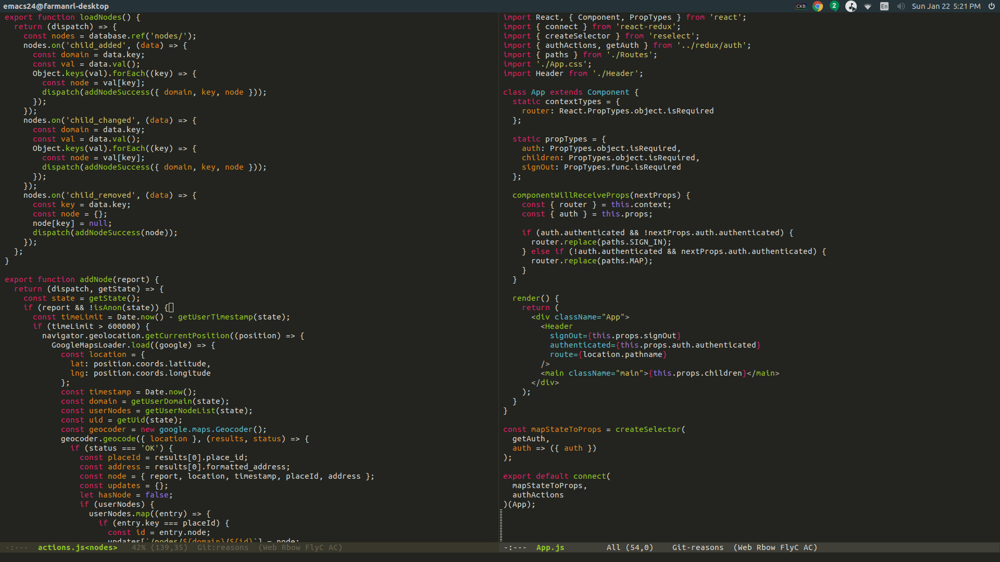

Graduating in 2018 as the first Computer Science major of Whitman College. Founder and Vice-President of CS@Whitman club, CS Tutor and class mentor, CS faculty representative. I lead a four-day training bootcamp every semester in webapp development for enterprising CS students.
With a year of professional software development experience, I've worked on building a front-end for an educational IDE, developed prototypes for pet adoption and team management services, and released a hybrid web/mobile application, complete with authentication, databasing, geolocation, and more.
With six years of independent production, I've produced photos, videos, animations, and blogs for nonprofit organizations, businesses, startups, and crowdfunded $6,400 for an undergraduate research project.
Experience and training in development of modern front-end user experiences and interface design using the latest technology.
Working knowledge of designing and developing back-end systems for a variety of purposes, with features like authentication, databasing, web storage, hosting, and more.
With several independent projects under my lead, comfortable in recruiting and training new developers, I can see a project through from start to finish, from the big picture to the smallest detail.

As students carry out their busy lifestyles, many are turning to inexpensive and convenient drink based meal-alternatives, such as Soylent, to supplement or replace their regular diets. We crowdfunded $6,405 to start a project to track the composition of participant's microbiome before, during, and after Soylent use to more holistically understand Soylent's impact on microbiome health.
Colon Cancer is one of the greatest threats to the health adults over 50, yet also one of the most preventable. This video was created as a campaign to raise awareness and motivate screenings to educate the public and save lives. Recieved award for 'Best Video' from the American College of Gastroenterology.
For every fifteen minutes, a life is taken as the result of drunk driving. This is the story of the shock, horror, and disbelief when a tragic accident befalls students of Davis Senior High School. Produced in cooperation with Davis Police and Fire Departments, premiered to the student body.